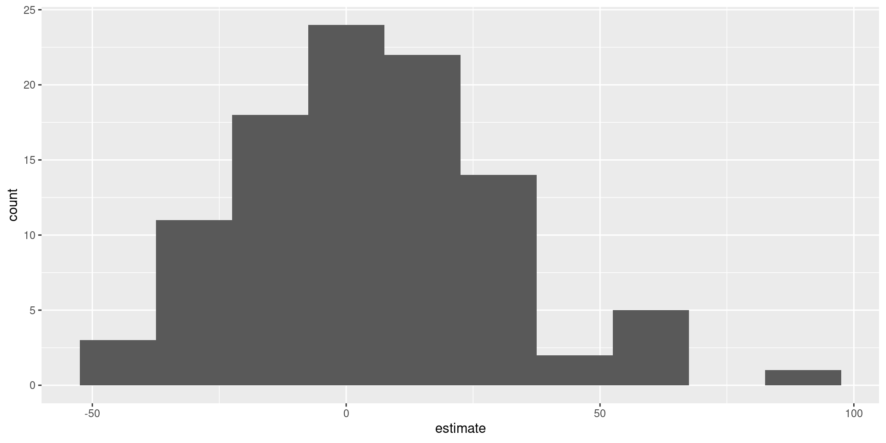
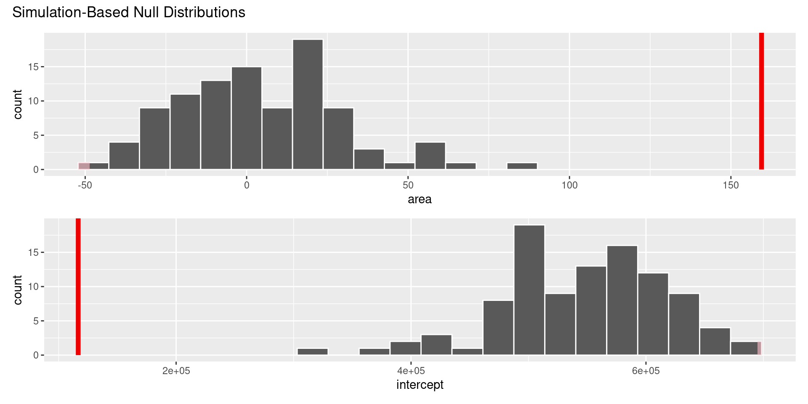
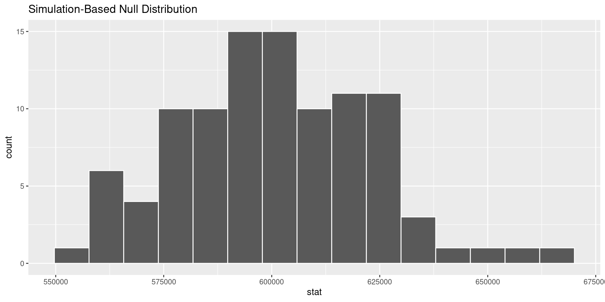
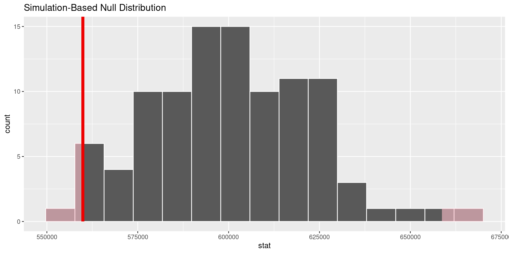

Inference overview
Lecture 23
Warm-up
While you wait…
Go to your
aeproject in RStudio.Make sure all of your changes up to this point are committed and pushed, i.e., there’s nothing left in your Git pane.
Click Pull to get today’s application exercise file: ae-19-equality-randomization.qmd.
Wait till the you’re prompted to work on the application exercise during class before editing the file.
From last time: Randomization
Packages
Data: Houses in Duke Forest
- Data on houses that were sold in the Duke Forest neighborhood of Durham, NC around November 2020
- Scraped from Zillow
- Source:
openintro::duke_forest

Setting hypotheses
Null hypothesis, \(H_0\): “There is nothing going on.” The slope of the model for predicting the prices of houses in Duke Forest from their areas is 0, \(\beta_1 = 0\).
Alternative hypothesis, \(H_A\): “There is something going on”. The slope of the model for predicting the prices of houses in Duke Forest from their areas is different than 0, \(\beta_1 \ne 0\).
Calculate observed slope
… which we have already done:
observed_fit <- duke_forest |>
specify(price ~ area) |>
fit()
observed_fit# A tibble: 2 × 2
term estimate
<chr> <dbl>
1 intercept 116652.
2 area 159.Simulate null distribution
View null distribution
null_dist# A tibble: 200 × 3
# Groups: replicate [100]
replicate term estimate
<int> <chr> <dbl>
1 1 intercept 547294.
2 1 area 4.54
3 2 intercept 568599.
4 2 area -3.13
5 3 intercept 561547.
6 3 area -0.593
7 4 intercept 526286.
8 4 area 12.1
9 5 intercept 651476.
10 5 area -33.0
# ℹ 190 more rowsVisualize null distribution
null_dist |>
filter(term == "area") |>
ggplot(aes(x = estimate)) +
geom_histogram(binwidth = 15)
Visualize null distribution (alternative)
visualize(null_dist) +
shade_p_value(obs_stat = observed_fit, direction = "two-sided")
Get p-value
null_dist |>
get_p_value(obs_stat = observed_fit, direction = "two-sided")Warning: Please be cautious in reporting a p-value of 0. This result is an
approximation based on the number of `reps` chosen in the
`generate()` step.
ℹ See `get_p_value()` (`?infer::get_p_value()`) for more information.
Please be cautious in reporting a p-value of 0. This result is an
approximation based on the number of `reps` chosen in the
`generate()` step.
ℹ See `get_p_value()` (`?infer::get_p_value()`) for more information.# A tibble: 2 × 2
term p_value
<chr> <dbl>
1 area 0
2 intercept 0Make a decision
Based on the p-value calculated, what is the conclusion of the hypothesis test?
Inference for a mean
Estimating the average price of houses in Duke Forest
Estimate the average price of houses in Duke Forest with a 95% confidence interval.
Computing the CI for the mean I
Calculate the observed mean:
observed_mean <- duke_forest |>
specify(response = price) |>
calculate(stat = "mean")
observed_meanResponse: price (numeric)
# A tibble: 1 × 1
stat
<dbl>
1 559899.Computing the CI for the mean II
Take 100 bootstrap samples and calculate the mean of each one:
set.seed(1121)
boot_means <- duke_forest |>
specify(response = price) |>
generate(reps = 100, type = "bootstrap") |>
calculate(stat = "mean")
boot_meansResponse: price (numeric)
# A tibble: 100 × 2
replicate stat
<int> <dbl>
1 1 591471.
2 2 545975.
3 3 588256.
4 4 569751.
5 5 566394.
6 6 583654.
7 7 533031.
8 8 575321.
9 9 559893.
10 10 588826.
# ℹ 90 more rowsComputing the CI for the mean III
Compute the 95% CI as the middle 95% of the bootstrap distribution:
get_confidence_interval(
boot_means,
point_estimate = observed_mean,
level = 0.95,
type = "percentile"
)# A tibble: 1 × 2
lower_ci upper_ci
<dbl> <dbl>
1 521923. 605514.Making a decision about the average price of houses in Duke Forest
An article in the Durham Herald Sun states that the average price of a house in Duke Forest is $600,000. Do these data provide convincing evidence to refute this claim?
Setting the hypotheses
Define \(\mu\) as the true average price of all houses in Duke Forest:
\(H_0: \mu = 600000\) - The true average price of all houses in Duke Forest is $600,000 (as claimed by the Durham Herald Sun, i.e., there’s nothing going on)
\(H_A: \mu \ne 600000\) - The true average price of all houses in Duke Forest is different than $600,000 (refuting the claim by the Durham Herald Sun, i.e., there is something going on)
Calculate the observed
Well, we already did this!
observed_meanResponse: price (numeric)
# A tibble: 1 × 1
stat
<dbl>
1 559899.Simulate the null distribution
set.seed(1121)
null_means <- duke_forest |>
specify(response = price) |>
hypothesize(null = "point", mu = 600000) |>
generate(reps = 100, type = "bootstrap") |>
calculate(stat = "mean")
null_meansResponse: price (numeric)
Null Hypothesis: point
# A tibble: 100 × 2
replicate stat
<int> <dbl>
1 1 631572.
2 2 586077.
3 3 628357.
4 4 609853.
5 5 606495.
6 6 623755.
7 7 573132.
8 8 615423.
9 9 599994.
10 10 628927.
# ℹ 90 more rowsVisualize the null distribution
visualize(null_means)
Calculate the p-value
- Probability of observed or lower outcome, given the given the null hypothesis is true: \(P(\bar{x} < 559899 ~ | ~ \mu = 600000)\)
. . .
- Probability of observed or more extreme outcome, given the null hypothesis is true:
\[ 2 \times P(\bar{x} < 559899 ~ | ~ \mu = 600000) \]
. . .
null_means |>
get_p_value(
obs_stat = observed_mean,
direction = "two-sided"
)# A tibble: 1 × 1
p_value
<dbl>
1 0.02Visualize the p-value
visualize(null_means) +
shade_p_value(
obs_stat = observed_mean,
direction = "two-sided"
)
Application exercise
ae-19-equality-randomization
Go to your ae project in RStudio.
If you haven’t yet done so, make sure all of your changes up to this point are committed and pushed, i.e., there’s nothing left in your Git pane.
If you haven’t yet done so, click Pull to get today’s application exercise file: ae-19-equality-randomization.qmd.
Work through the application exercise in class, and render, commit, and push your edits.
Recap of AE
- A hypothesis test is a statistical technique used to evaluate competing claims (null and alternative hypotheses) using data.
- We simulate a null distribution using our original data.
- We use our sample statistic and direction of the alternative hypothesis to calculate the p-value.
- We use the p-value to determine conclusions about the alternative hypotheses.